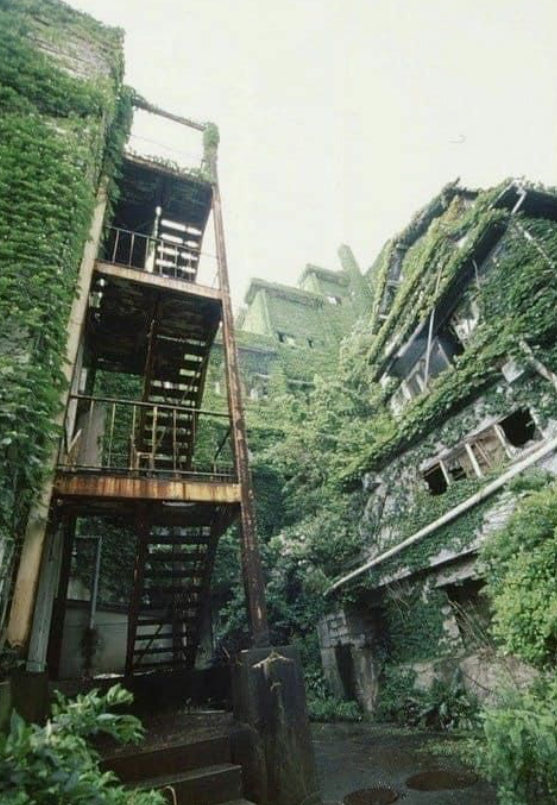

Hashima Island
Hashima Island: The Real-Life Abandoned Island.
Hey there, adventure seekers! Ever wanted to visit a real-life ghost town? Hashima Island,
also known as Battleship Island, is one of the coolest and creepiest abandoned places you could imagine. Here’s why it’s so fascinating:
Spooky Vibes: Imagine walking through deserted concrete buildings, empty schools, and silent apartments. Hashima Island is like
stepping into a post-apocalyptic video game or movie set.
Skyfall Connection: Remember the 2012 James Bond movie "Skyfall"? The villain’s hideout was inspired by Hashima Island! So, you
can totally brag about visiting a place straight out of a Bond movie.
Ultimate Selfie Spot: If you ever get to visit, the island makes for some epic photos. The eerie, decaying buildings are perfect
for those Instagram shots that’ll make your feed stand out.
Dense Living: Back in the day, Hashima was one of the most crowded places on Earth. Picture a tiny island packed with high-rise
buildings, all built to house the coal miners and their families.
Ghost Town: The island was abandoned in 1974 when the coal mine shut down. Now, it’s a ghost town with nature slowly taking over.
It’s like Mother Nature’s way of saying, “I’ll take it from here.”
Survival Story: The island’s nickname, Battleship Island, comes from its shape and the fact that it was built to withstand typhoons
and harsh weather. It’s a survivor, just like you!
No Shopping: Back in its heyday, there were shops, schools, and even a cinema. Now, it’s just you and the memories of what used to be.
UNESCO Status: In 2015, Hashima Island became a UNESCO World Heritage site. It’s like the island got a big, fancy award for its role
in Japan’s history.
Haunted?: Some say the island is haunted by the spirits of the past. Whether you believe in ghosts or not, it definitely adds to the
island’s mysterious allure.
You can’t just wander around the island freely because it’s not safe, but there are boat tours that take you close enough for some
amazing views. Some tours even let you step onto designated safe areas of the island.
Hashima Island has appeared in movies, documentaries, and even video games. It's a favorite spot for filmmakers looking for that
perfect post-apocalyptic setting.
So, next time you’re looking for an adventure or just want to impress your friends with some cool trivia, remember Hashima Island.
It’s a real-life ghost island with a story as dramatic as any movie plot!

Pripyat
Pripyat: The Abandoned City of Chernobyl.
Hey explorers! Ready to dive into the story of Pripyat, the ghost city that’s been frozen in time since one of the most famous nuclear
disasters ever? Here’s what you need to know about this eerie and intriguing place:
Instant Abandonment: Pripyat was evacuated in just 36 hours after the Chernobyl disaster in 1986. Imagine leaving everything behind and
never coming back—spooky, right?
Time Capsule: The city is like a time capsule from the '80s. Old Soviet-era buildings, abandoned schools with textbooks still on desks,
and empty amusement parks make it feel like time just stopped.
Radioactive Adventure: Even today, Pripyat is still radioactive. But don’t worry, you can visit on guided tours with special safety
measures. It’s like stepping into a real-life science fiction story.
Abandoned Amusement Park: One of the most famous sights is the Pripyat amusement park, which was supposed to open just days after the
disaster. The Ferris wheel and bumper cars are still there, rusting and overgrown.
Nature’s Comeback: Without people around, nature has taken over. Trees and plants grow through buildings and streets, making it look
like a post-apocalyptic jungle.
Cultural Icon: Pripyat has inspired tons of movies, TV shows, and video games. Ever played "S.T.A.L.K.E.R." or watched the HBO series
"Chernobyl"? Yup, Pripyat is at the heart of those stories.
Speedy Evacuation: The residents were told they’d be gone for just a few days, so they left most of their belongings behind. They
never returned.
Mutant Myths: While there are no real-life mutants, the radiation has affected the local wildlife in interesting ways. Some animals
have adapted surprisingly well to the radioactive environment.
Urban Exploration: Pripyat is a top destination for urban explorers. But remember, you need to be on a guided tour to stay safe and
legal.
Hospital No. 126: This is where the first victims of the disaster were treated. The basement is still highly radioactive because
it contains the firefighters’ uniforms.
Energetik Palace of Culture: Once a bustling community center, now it’s a haunting ruin with peeling paint and empty halls.
Pripyat Swimming Pool: This indoor pool remained in use by cleanup workers for years after the disaster before being abandoned.
You can visit Pripyat on a guided tour from Kyiv, Ukraine. Tours provide Geiger counters so you can measure the radiation levels
(and feel like a real-life scientist!). The guides will share the city’s history and take you to the most iconic spots, all
while keeping you safe.
Pripyat has been featured in:
Movies: Films like "Chernobyl Diaries" and "Transformers: Dark of the Moon" have scenes set in Pripyat.
TV Shows: The HBO miniseries "Chernobyl" brought a lot of attention to the city and the disaster.
Video Games: Games like "Call of Duty 4: Modern Warfare" and "S.T.A.L.K.E.R." series let you explore virtual versions of Pripyat.
So, whether you're a history buff, a gamer, or just love a good adventure, Pripyat is a place that captures the imagination.
It’s a haunting reminder of the past and a fascinating glimpse into what happens when a city is left to nature.
Bannerman Castle
Bannerman Castle: A Real-Life Ruined Fortress
Hey there, history buffs and adventure seekers! Ever dreamed of exploring a real-life castle straight out of a fantasy novel?
Look no further than Bannerman Castle, a mysterious and intriguing ruin located on an island in the Hudson River, New York.
Here’s what makes it so cool:
Built by a Real-Life Arms Dealer: Bannerman Castle was constructed by Francis Bannerman VI, an eccentric Scottish-American
who made his fortune selling military surplus goods.
Island Fortress: The castle is on Pollepel Island, a small island about 50 miles north of New York City. It’s the perfect
setting for an adventure.
Ruins and Mystery: The castle was partially destroyed by an explosion in 1920 and later by a fire in 1969. Now, it's a
picturesque ruin that looks like something out of a fantasy story.
Epic History: Bannerman bought the island in 1900 and started building the castle as a place to store his massive collection of
military surplus. He even designed it to look like a Scottish castle, complete with towers and battlements.
Explosive Past: In 1920, a large part of the castle was destroyed when some of the stored ammunition exploded. This added to its
reputation as a mysterious and dangerous place.
Nature’s Takeover: Like something out of a fairytale, the ruins of the castle are now intertwined with vines and greenery, making
it a breathtaking sight.
Hidden Treasure: Bannerman used to hide weapons and ammunition all over the island. It’s like a real-life treasure hunt!
Movie Set Vibes: The castle and island have a cinematic feel, making them popular spots for photographers and filmmakers.
Eccentric Design: Bannerman was a bit of an eccentric. He built the castle not just as a storage site but also as a summer retreat
for his family, with gardens and even a small house.
he Castle Ruins:T The main attraction, of course, is the castle itself. You can explore the crumbling walls and towers, which look
straight out of a medieval story.
The Bannerman Residence: A smaller, still-intact building where the Bannerman family used to stay during their visits.
Stunning Views: The island offers amazing views of the Hudson River and the surrounding countryside, perfect for a scenic adventure.
You can visit Bannerman Castle on guided tours that run from spring to fall. These tours take you by boat to the island, where you can
learn about its history and explore the ruins safely.
Bannerman Castle has appeared in:
TV Shows: Featured in various documentaries and historical TV shows that explore haunted or abandoned places.
hotography:P It’s a popular subject for photographers looking for dramatic and beautiful shots.
Books: Inspired various stories and novels that delve into its mysterious past.
So, if you're into history, ghost stories, or just love a good adventure, Bannerman Castle is a must-visit. It’s like stepping
into a fantasy world right in the middle of New York!
Kolmanskop
Kolmanskop: The Ghost Town of the Namib Desert
Hey adventure lovers! Ever wanted to explore a town swallowed by sand? Kolmanskop, located in the Namib Desert of Namibia,
is one of the world’s most famous ghost towns, and it's as fascinating as it is eerie. Here’s the lowdown on this abandoned gem:
Diamond Rush Origins: Kolmanskop was founded in the early 1900s during a diamond rush. It quickly grew into a prosperous mining town.
Deserted in the Desert: The town was abandoned in the 1950s when the diamond resources were depleted, leaving behind a hauntingly
beautiful ghost town.
Sands of Time: Over the years, the desert sands have slowly reclaimed Kolmanskop, filling buildings and streets with drifts of sand.
Sandy Interiors: Imagine walking through houses where sand dunes reach up to the ceiling. It’s like stepping into a surreal dreamscape.
Luxury in the Desert: At its peak, Kolmanskop was a thriving community with a hospital, ballroom, power station, school, skittle alley,
theatre, and even the first x-ray station in the southern hemisphere.
Photographer’s Paradise: The contrast of decaying buildings and encroaching sand makes for some epic photography opportunities. It’s
a must-see for anyone interested in urban exploration.
Ice Factory: Kolmanskop had an ice factory to supply ice to the residents in the sweltering desert heat—a true luxury at the time.
Architectural Mix: The buildings in Kolmanskop reflect a mix of German colonial architecture, showcasing the heritage of
the miners who lived there.
Ghost Town Fame: It’s one of the most famous ghost towns in the world, often featured in documentaries and travel shows.
Sand-Filled Buildings: Wander through houses filled with sand dunes. Each room looks like a scene from another world.
Old Hospital: Explore the remnants of the hospital, once a state-of-the-art facility in its time.
The Theatre and Ballroom: Imagine the glamorous parties that were once held here, now eerily silent and covered in sand.
You can visit Kolmanskop on guided tours that provide a glimpse into the town’s rich history and its eerie present.
Tours typically start from the nearby town of Lüderitz and offer a fascinating look at life in a diamond mining town.
Kolmanskop has been featured in:
Photography: A popular subject for photographers, its unique blend of decay and desert beauty makes for stunning images.
Movies and TV:bOften appears in films and documentaries exploring abandoned places or the history of diamond mining.
Music Videos: The haunting, surreal landscape has inspired various music videos and artistic projects.
So, whether you’re a history buff, a fan of ghost stories, or just love exploring unique and beautiful places, Kolmanskop is
a destination that should be on your bucket list. It’s a hauntingly beautiful reminder of the past and a testament to the power of nature.
if you find this topic interesting you should watch Dima Maslennikov's Ghostbaster
click to check out the Ghostbaster palylistüî•here's a clip from his most recent Ghostbaster: